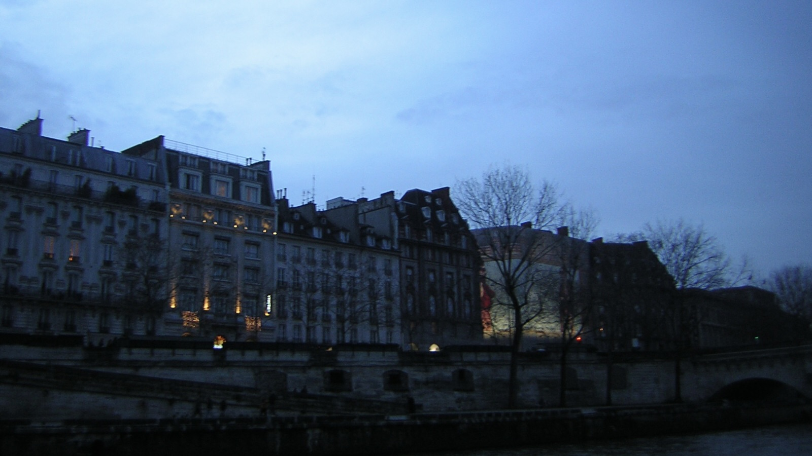
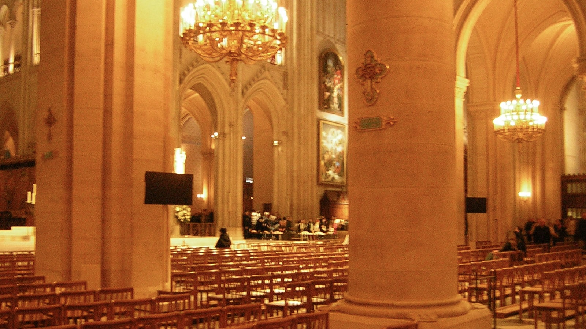
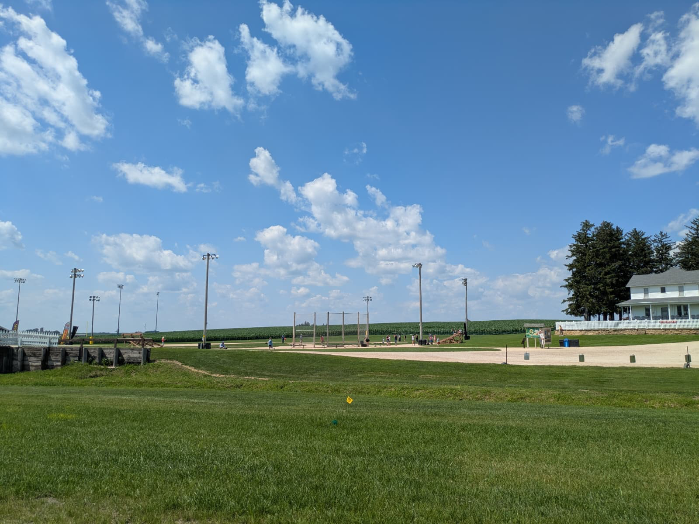
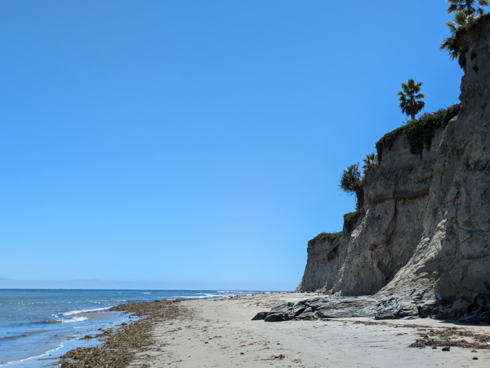
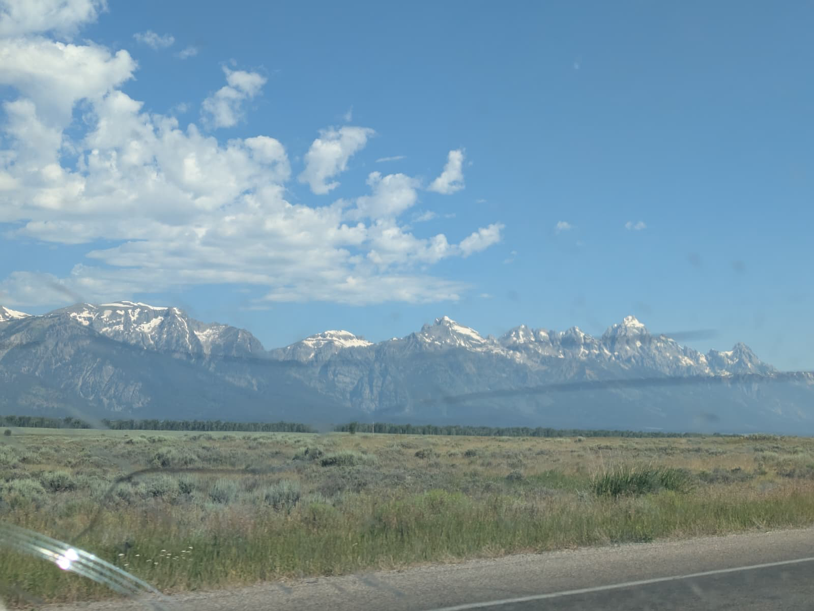
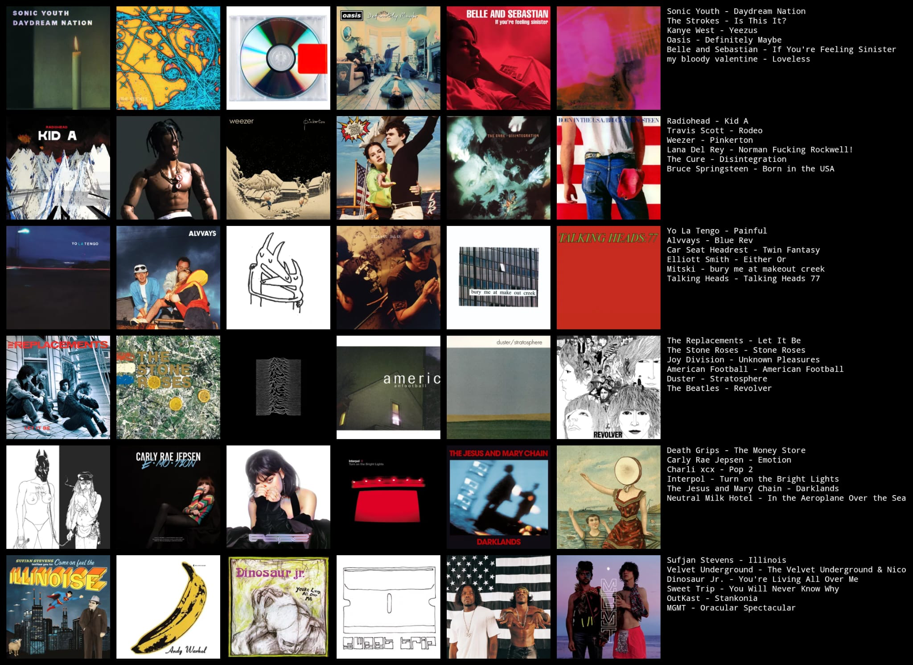

> travel
i grew up in bangalore, india and st. louis, missouri, with a brief stint in reading, england, but you're more likely to find me in paris, france, or somewhere on the highway.


apart from that i've travelled a fair bit: road trips across the states, a variety of places in europe, various indian cities. i don't really keep track. that said, there are three pretty cool places i've been to that stand out, and they were all covered in the same Oregon -> Michigan road trip that happened in June/July 2025: Ernest Hemingway's Grave in Ketchum, Idaho, the Teton Range in Jackson Hole, Wyoming, and the Field of Dreams in Dyersville, iowa. you should go.
i've done 23 of the states: all the midwest, all the pacific states. the big gap is the south, where i've only ever been to texas. europe i've only just started: 3 countries so far.
i assume you'd like to know what's the best of these places. the answer is paris. i would suspect nyc and chicago come close, but i've never spent long enough in those places to judge. fancy boston people will tell you otherwise, but they are wrong, boston is bang-average and full of nerds.




the best weather in the world is in southern california.
i am not a food person, but i am a chicken sandwich person. northern europeans are very good at this, though i for the life of me don't know why. the best pizza is neapolitan (nyc-style is a close second). the best foods in general are cheeseburgers and rajma-chawal. american cuisine is deeply underrated.
if there's only one place you can go to then go to chicago.
> paris
i've lived in paris for not very long but have an eidetic knowledge of the city. here is what you should do in paris.
- if you want to do the eiffel tower, don't just follow the map, the park is not good and is full of scammers. the easy thing is to is to take the m6 line to trocadero where you can take pictures. after this, approach the tower from along the seine. the walk from point alexandre iii is a couple miles and one of the most beautiful walks in the city.
- the louvre is fine. you probably won't like it because it's crowded and all the paintings look the same, but it's worth seeing for the big sculptures. take a half a day and have ice cream at the tuileries later. the museum you should definitely hit is the musée de l'Orangerie. this has about a hundred of the best modernist paintings in the world. the other one you could hit is musée d'Orsay, which is quite good, but has an annoying layout. everything else is for fans.
- ideally you'd like to go shopping. go to galeries lafayette but don't buy anything, you won't be able to afford it. you can always shop at le halles, but the best bet is to hit thrift stores at le marais. or i mean you can go to uniqlo. if you want souvenirs you can always go to the river but good ones are in niche shops in île-st-louis.
- go to the notre dame. it's also free. the other churches are similarly nice and often have free classical music concerts happening in them.
- nightlife is good in the 11th arrondisement. 5th has too many students (people will say rue mouffetard but i've never really enjoyed it, it's just a place to eat) and they all speak only french. bastille and republique are good, there's nice english speaking pubs. supersonic is obviously great. you can go to pubs like the highlander or the mazet, they have a more lowkey crowd. 8th, 9th and 10th are really good, but the 8th is also pretty posh; there's a chance they don't let you in. otherwise there's always the 4th.
- père-lachaise is a must. so is cimetière montparnasse. montparnasse especially has a bunch of people: eric rohmer, samuel beckett, agnes varda and so on.
- the good parks are parc montsouris and parc des buttes-chaumont. also the forest, bois de vinciennes, is quite nice.
- they have diet cherry vanilla coke in paris...
you can always dm me for recommendations if you want, but i probably won't be able to help you with food. i usually just eat kebabs and boulangerie sandwiches.
> sports
i wasn't the world's biggest fan of sports growing up, but i was mildly into soccer and swimming. i run, i can do a 5k in 24:52, which is not particularly good but it's not awful or anything.
i hit the gym. this is my split.
as for teams, the big ones are manchester united (rip), philadelphia eagles (go birds!) and the cardinals. i also like the lions.
> cinema
i watch too many movies.
i translated a chinese movie into english, this is it. it's called death ray on coral island (1980) and was the first chinese science fiction film ever made.
i wrote an essay on jean-luc godard's breathless (1960), which i think is the most important film ever made. this is it.
i watch all kinds of films but really like american and asian films. my favorites are dazed and confused (1993) and miami vice (2006), although i'll watch anything. a niche film i like is haru (1996).
> music
i will put up my embarrassing topster...

> literature
read david foster wallace and yasunari kawabata if you can. i also like milan kundera and joan didion.
i write literature, you will be able to read it one day soon i hope!
> misc
various things you can talk about with me:
- the phenomenological experience of being a native american in 1492
- poker
- origami
- american imperialism
- details about diet soda
- wandering albatrosses
- oasis live in knebworth 1997 "live forever"
- travis scott
finally, don't forget to spatchcock your turkey!